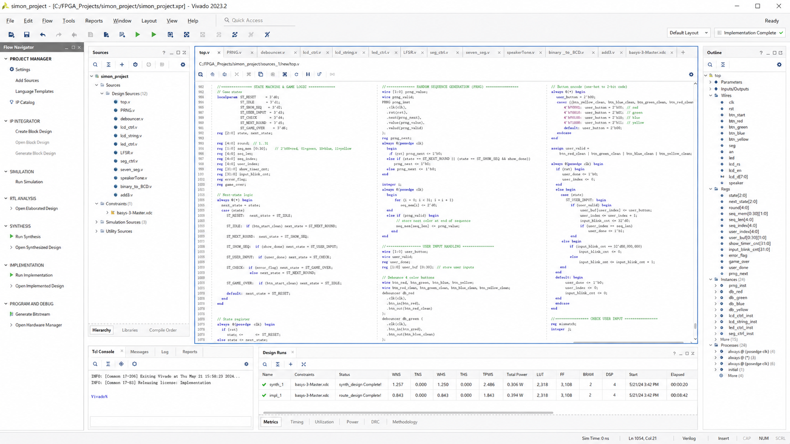

Project Overview
The project recreates the Simon memory game as a digital hardware system. The FPGA generates a sequence, presents it through the illuminated buttons, reads the player's response, and checks each input before advancing the game.
The design combines game logic with physical inputs and outputs, including the button panel, LCD, seven-segment display, and speaker.
Digital Logic Architecture
The design separates the main game sequence into clear hardware stages, keeping the control logic organized and each interface independently testable. A finite state machine controls the transitions between presenting the sequence, reading the player's response, and comparing each input. This structure gives each part of the game a defined role in the overall flow.
Verilog Implementation
The final design was divided into Verilog modules for the game state machine, sequence generation, button input, LCD control, seven-segment display, and audio output. Dividing the design into modules helped organize the different hardware functions and connect them through the main game logic. Button debouncing also helps the system read a press as a single input.
Vivado Project & Verilog Source

Working Prototype
Complete Hardware Demonstration
The finished system runs the Simon game on the Basys 3 board and coordinates the controls, illuminated buttons, displays, and audio as one working prototype. This project gave me experience connecting digital logic to physical inputs and outputs and building a complete interactive system in Verilog.